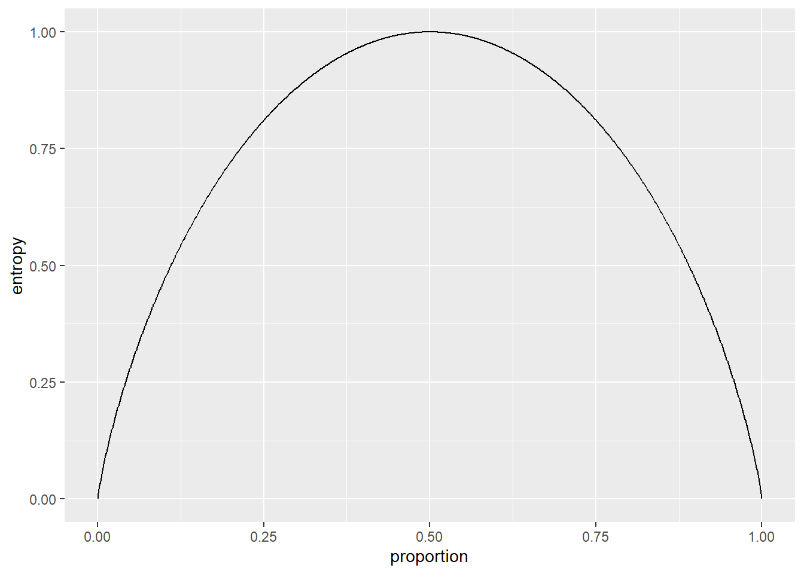

Chapter 12 Classification Trees
Optional Reading: Chapter 5 in Machine Learning with R by Brett Lantz.
In this chapter, we will load the following libraries.
12.1 Introduction
A decision tree utilizes a tree structure to model the relationship between the features and the outcomes. In each branching node of the tree, a specific feature of the data is examined. According to the value of the feature, one of the branches will be followed. The leaf node represents the class label. Below is a simplified example of determining if you should accept a new job offer.

In the above example, the leaf nodes are “Decline offer” and “Accept offer”. The paths from the root to leaf node represent classification rules.
In data science, there are two types of decision trees:
- classification tree - for discrete outcomes (our focus in this chapter)
- regression tree - for continuous outcomes
Classification trees are used for classification problems. Consider the iris dataset, which is available in base R. We have \(150\) observations and \(5\) variables named Sepal.Length, Sepal.Wdith, Petal.Length, Petal.Width, and Species.
Let’s take a look at the data.
str(iris)
## 'data.frame': 150 obs. of 5 variables:
## $ Sepal.Length: num 5.1 4.9 4.7 4.6 5 5.4 4.6 5 4.4 4.9 ...
## $ Sepal.Width : num 3.5 3 3.2 3.1 3.6 3.9 3.4 3.4 2.9 3.1 ...
## $ Petal.Length: num 1.4 1.4 1.3 1.5 1.4 1.7 1.4 1.5 1.4 1.5 ...
## $ Petal.Width : num 0.2 0.2 0.2 0.2 0.2 0.4 0.3 0.2 0.2 0.1 ...
## $ Species : Factor w/ 3 levels "setosa","versicolor",..: 1 1 1 1 1 1 1 1 1 1 ...The first four variables are numeric features of the flowers. The last column in the dataset is the species of the flower. We will illustrate how to use the numeric features of the flowers to classify the flowers.
First, we will split the dataset into a training dataset and a testing dataset.
set.seed(6)
random_index <- sample(nrow(iris), 100) # select 100 examples for our training dataset
iris_train <- iris[random_index, ]
iris_test <- iris[-random_index, ]To create a scatterplot matrix, we can use pairs (base R graphics) or ggpairs (in the package GGally).
With pairs():
# we only want to plot the numeric features
# the 5th column is the species of the flowers
pairs(iris_train[, -5])
With ggpairs():
library(GGally) # to use ggpairs, install it first if you haven't done so
ggpairs(data = iris_train, aes(color = Species, alpha = 0.8), columns = 1:4)
In ggpairs():
columns = 1:4tells the function only uses the first \(4\) columns of the dataset for plottingcolor = Speciesindicates that we map the color to the variableSpeciesalpha = 0.8controls the level of transparency so that the density estimates do not overlap each other completely
From the plots, it seems that the variable Petal.Width and Petal.Length will be useful in classifying the flowers. Let’s focus on the scatterplot of these two variables.

From the above plot, we see that we can easily classify the flowers with high accuracy using these two features. For example, if we draw the horizontal line \(y = 1.9\), we could classify any iris lying on or below this line as setosa with \(100\%\) accuracy.

Next, we draw the vertical line \(x = 1.7\). We could classify any iris lying on or to the left of this line as versicolor.

We get a pretty good classification with only 3 mistakes.
The above classification is an example of classification trees (because the outcome is categorical) and can be visualized as

In the chapter, we will learn how to perform such a task using the C5.0 algorithm in R.
12.2 The C5.0 classification tree algorithm
There are different implementations of classification trees, we will use the C5.0 algorithm. Another popular algorithm is the CART (use the package rpart in R).
Strengths of classification trees:
- an all-purpose classifier that does well on many types of problems
- highly automatic learning process, which can handle numeric or nominal features, as well as missing data
- excludes unimportant features
- can be used on both small and large datasets
- results in a model that can be interpreted without a mathematical background
- more efficient than other complex models
Weaknesses of classification trees:
- decision tree models are often biased toward splits on features having a large number of levels
- it is easy to overfit or underfit the model
- can have trouble modeling some relationships due to reliance on axis-parallel splits
- small changes in training data can result in large changes to decision logic
- large trees can be difficult to interpret and the decisions they make may seem counterintuitive
12.2.1 Choosing the best split
As we can see from the iris example, we first have to identify the feature to split upon. We choose the feature so that the resulting partitions contain examples primarily of a single class.
In machine learning, examples mean observations.
Definition: Purity = the degree to which a subset of examples contains only a single class
One common measure of purity is entropy. For \(c\) classes (recall that we are considering classification problems), entropy ranges from \(0\) to \(\log_2(c)\). Entropy is defined as \[\begin{equation*} \text{Entropy}(S) = - \sum^c_{i=1} p_i \log_2 (p_i), \end{equation*}\] where \(S\) is a given set of data, \(c\) is the number of class levels, \(p_i\) is the proportion of data in class level \(i\), \(\log_2\) is the logarithm to the base \(2\). By convention, \(0 \log_2 0 = 0\).
Example: Suppose we have \(10\) data where \(6\) of them are in group A and the rest are in group B. The entropy is \(-0.6 \log_2(0.6) - 0.4 \log_2 (0.4) = 0.097\).
The smaller the entropy is, the purer the class is. If the Entropy is \(0\), it means the sample is completely homogeneous. That is, all the data belong to one group. If the entropy is \(log_2(c)\), it means the data are as diverse as possible.
The following figure shows the entropy as a function of the proportion of one class when there are only two classes. The maximum entropy is obtained when we have \(50\%\) of data in one group and another \(50\%\) of data in another group.

\(C5.0\) algorithm uses entropy to determine the optimal feature to split upon. The algorithm calculates the information gain that would result from a split on each possible feature, which is a measure of the change in homogeneity. The information gain for a particular feature \(F\) is calculated as the difference between the entropy before the split, denoted by \(\text{Entropy}(S)\), and the entropy after the split, denoted by \(\text{Entropy}(S|F)\): \[\begin{equation*} \text{InfoGain}(F) = \text{Entropy}(S) - \text{Entropy}(S|F). \end{equation*}\] Suppose the feature \(F\) can take \(m\) values (WLOG, assume the \(m\) values are \(1,\ldots,m\)), which splits the data into \(m\) partitions. Then, \[\begin{equation*} \text{Entropy}(S|F) = \sum^m_{i=1} w_i \text{Entropy}(S_F(i)), \end{equation*}\] where \(w_i\) is the proportion of data in the \(i\)th partition and \(S_F(i)\) is the set of data in the \(i\)th partition.
Example of Calculating Information Gain
Consider the following data.
animal
## # A tibble: 15 x 4
## Animal TravelsBy HasFur Mammal
## <chr> <chr> <chr> <chr>
## 1 Bats Air Yes Yes
## 2 Bears Land Yes Yes
## 3 Birds Air No No
## 4 Cats Land Yes Yes
## 5 Dogs Land Yes Yes
## 6 Eels Sea No No
## 7 Elephants Land No Yes
## 8 Fish Sea No No
## 9 Frogs Land No No
## 10 Insects Air No No
## 11 Pigs Land No Yes
## 12 Rabbits Land Yes Yes
## 13 Rats Land Yes Yes
## 14 Rhinos Land No Yes
## 15 Sharks Sea No NoSuppose we want to classify animals as mammal or non-mammal. Before any splitting, we have \(15\) animals and \(9\) of them are mammals.
The entropy is
\[\begin{equation*}
- \frac{9}{15} \log_2 \bigg( \frac{9}{15} \bigg) - \frac{6}{15} \log_2 \bigg( \frac{6}{15} \bigg) = 0.971.
\end{equation*}\]
Remark: you can use log2(x) to compute \(\log_2(x)\).
If we split the node by TravelsBy, we have \(3\) partitions.
# 1st partition
filter(animal, TravelsBy == "Air")
## # A tibble: 3 x 4
## Animal TravelsBy HasFur Mammal
## <chr> <chr> <chr> <chr>
## 1 Bats Air Yes Yes
## 2 Birds Air No No
## 3 Insects Air No No\[\begin{equation*} \text{Entropy}(S_\text{TravelsBy}(\text{Air})) = - \frac{1}{3} \log_2 \frac{1}{3} - \frac{2}{3} \log_2 \frac{2}{3} = 0.918. \end{equation*}\]
# 2nd partition
filter(animal, TravelsBy == "Land")
## # A tibble: 9 x 4
## Animal TravelsBy HasFur Mammal
## <chr> <chr> <chr> <chr>
## 1 Bears Land Yes Yes
## 2 Cats Land Yes Yes
## 3 Dogs Land Yes Yes
## 4 Elephants Land No Yes
## 5 Frogs Land No No
## 6 Pigs Land No Yes
## 7 Rabbits Land Yes Yes
## 8 Rats Land Yes Yes
## 9 Rhinos Land No Yes\[\begin{equation*} \text{Entropy}(S_\text{TravelsBy}(\text{Land})) = - \frac{8}{9} \log_2 \frac{8}{9} - \frac{1}{9} \log_2 \frac{1}{9} = 0.503 \end{equation*}\]
# 3rd partition
filter(animal, TravelsBy == "Sea")
## # A tibble: 3 x 4
## Animal TravelsBy HasFur Mammal
## <chr> <chr> <chr> <chr>
## 1 Eels Sea No No
## 2 Fish Sea No No
## 3 Sharks Sea No No\[\begin{equation*} \text{Entropy}(S_\text{TravelsBy}(\text{Sea})) = 0. \end{equation*}\]
Entropy after splitting:
\[\begin{eqnarray*}
\text{Entropy}(S|\text{TravelsBy}) &=& w_{\text{Air}} \text{Entropy}(S_\text{TravelsBy}(\text{Air})) +\\
&& \quad w_{\text{Land}} \text{Entropy}(S_\text{TravelsBy}(\text{Land})) + \\
&& \quad w_{\text{Sea}} \text{Entropy}(S_\text{TravelsBy}(\text{Sea})),
\end{eqnarray*}\]
where \(w_{\text{Air}} = \frac{3}{15}\), \(w_{\text{Land}} = \frac{9}{15}\), \(w_{\text{Sea}} = \frac{3}{15}\).
Therefore, \(\text{Entropy}(S|\text{TravelsBy})\) is \(0.486\). The information gain by splitting using TravelsBy is \(0.971 - 0.486 = 0.485\).
Now, let’s compute the information gain by splitting using HasFur. If we split the node by HasFur, then we have \(2\) partitions.
# 1st partition
filter(animal, HasFur == "Yes")
## # A tibble: 6 x 4
## Animal TravelsBy HasFur Mammal
## <chr> <chr> <chr> <chr>
## 1 Bats Air Yes Yes
## 2 Bears Land Yes Yes
## 3 Cats Land Yes Yes
## 4 Dogs Land Yes Yes
## 5 Rabbits Land Yes Yes
## 6 Rats Land Yes Yes\[\begin{equation*} \text{Entropy}(S_\text{HasFur}(\text{Yes})) = 0. \end{equation*}\]
# 2nd partition
filter(animal, HasFur == "No")
## # A tibble: 9 x 4
## Animal TravelsBy HasFur Mammal
## <chr> <chr> <chr> <chr>
## 1 Birds Air No No
## 2 Eels Sea No No
## 3 Elephants Land No Yes
## 4 Fish Sea No No
## 5 Frogs Land No No
## 6 Insects Air No No
## 7 Pigs Land No Yes
## 8 Rhinos Land No Yes
## 9 Sharks Sea No No\[\begin{equation*} \text{Entropy}(S_\text{TravelsBy}(\text{Land})) = - \frac{3}{9} \log_2 \frac{3}{9} - \frac{6}{9} \log_2 \frac{6}{9} = 0.918. \end{equation*}\]
Entropy after splitting:
\[\begin{eqnarray*} \text{Entropy}(S|\text{HasFur}) &=& w_{\text{Yes}} \text{Entropy}(S_\text{HasFur}(\text{Yes})) +\\ && \quad w_{\text{No}} \text{Entropy}(S_\text{HasFur}(\text{No})) \\ &=& 0 + \frac{9}{15} (0.918) = 0.551. \end{eqnarray*}\]
The information gain by splitting using HasFur is \(0.971 - 0.551 = 0.42\). Since splitting using TravelsBy leads to a larger information gain, we should use this to create the first branch.
For Continuous Features
The formula for information gain assumes nominal features. For continuous features, a common practice is to test various splits that divide the values into groups greater than or less than a threshold. This reduces the continuous feature into a two-level categorical feature that allows information gain to be calculated as above. The numeric cut point yielding the largest information gain is chosen for the split.
For example, for the numeric feature Petal.Length, the split in the right plot results in a higher information gain.

Remark: to arrange multiple ggplot objects in a single plot, you can use ggarrange() from the package ggpubr as follows:
library(ggpubr) # install it first if you haven't done so
g1 <- ggplot(iris_train, aes(x = Petal.Width, y = Petal.Length, color = Species)) +
geom_point() +
geom_hline(yintercept = 1.5)
g2 <- ggplot(iris_train, aes(x = Petal.Width, y = Petal.Length, color = Species)) +
geom_point() +
geom_hline(yintercept = 2)
ggarrange(g1, g2, common.legend = TRUE, legend = "bottom")12.2.2 Pruning the decision tree
A decision tree can continue to grow indefinitely, choosing splitting features and dividing into smaller and smaller partitions. If the tree grows overly large, many of the decisions it makes will be overly specific and will not generalize to new data (i.e., overfitted to the training data). The process of pruning a decision tree involves reducing its size so that it generalizes better to unseen data. For C5.0 algorithm, it first grows a large tree that overfits the training data. Then, the nodes and branches that have little effect on the classification errors are removed.
12.3 Example: iris
Install the package C50 and load the library.
Model Training
Basic usage of C5.0() from C50:
x: a data frame containing the training data without the class labelsy: a factor vector of the class labels
Classification of the training data
table(iris_train$Species, predict(iris_ct, iris_train))
##
## setosa versicolor virginica
## setosa 37 0 0
## versicolor 0 33 0
## virginica 0 3 27Accuracy is \(97/100\).
Visualize the decision tree


From the summary, we see that
- if
Petal.Lengthis less than or equal to \(1.9\), then the example is classified as “setosa”. The numbers in the bracket indicates how many examples are classified as “setosa”. - if
Petal.Lengthis greater than \(1.9\) andPetal.Widthis less than or equal to \(1.7\), the example is classified as versicolor. This time there are two numbers in the bracket. The first number \(36\) indicates how many examples are classified as versicolor. The second number \(3\) indicates that out of \(36\) examples, \(3\) of them are classified incorrectly. - if
Petal.Lengthis greater than \(1.9\) andPetal.Widthis greater than \(1.7\), the example is classified as virginica. \(27\) examples are classified as virginica.
Evaluate the performance using testing data
table(iris_test$Species, predict(iris_ct, iris_test))
##
## setosa versicolor virginica
## setosa 13 0 0
## versicolor 0 16 1
## virginica 0 2 18Accuracy is \(47/50\). In general, the training accuracy will be higher than the testing accuracy.
12.4 Example: identifying risky bank loans
In this subsection, we will apply classification tree to identify factors that are linked to a higher risk of loan default. The dataset is from https://archive.ics.uci.edu/ml/datasets/statlog+(german+credit+data)
See also https://github.com/stedy/Machine-Learning-with-R-datasets/blob/master/credit.csv
The dataset contains \(1,000\) examples of loans, together with \(20\) features about the loans and the loan applicants.
credit <- read.csv("C:/Queens Teaching/Teaching/STAT 362/08_datasets/credit.csv",
stringsAsFactors = TRUE)
credit$default <- recode_factor(credit$default, "1" = "no", "2" = "yes")The default variable indicates whether the loan applicant was able to meet the agreed payment terms or if they went into default.
In this dataset, \(30\%\) of the loans went into default. If the bank can successfully predict who is more likely to default, it can reject the loan application and reduce the losses due to default loans.
We now split our data into a training dataset and a testing dataset.
set.seed(6)
random_index <- sample(nrow(credit), 900) # 90% of data
credit_train <- credit[random_index, ]
credit_test <- credit[-random_index, ]Model training
You can find the decision tree by using summary(credit_ct):

The meaning of this is similar to that of the iris dataset.
library(gmodels)
credit_train_pred <- predict(credit_ct, credit_train)
CrossTable(credit_train$default, credit_train_pred, prop.chisq = FALSE, prop.c = FALSE,
prop.r = FALSE, dnn = c("actual default", "predicted default"))
##
##
## Cell Contents
## |-------------------------|
## | N |
## | N / Table Total |
## |-------------------------|
##
##
## Total Observations in Table: 900
##
##
## | predicted default
## actual default | no | yes | Row Total |
## ---------------|-----------|-----------|-----------|
## no | 605 | 25 | 630 |
## | 0.672 | 0.028 | |
## ---------------|-----------|-----------|-----------|
## yes | 83 | 187 | 270 |
## | 0.092 | 0.208 | |
## ---------------|-----------|-----------|-----------|
## Column Total | 688 | 212 | 900 |
## ---------------|-----------|-----------|-----------|
##
## The accuracy for the training data is \(0.672 + 0.208 = 0.88\).
Evaluating model performance
credit_test_pred <- predict(credit_ct, credit_test)
CrossTable(credit_test$default, credit_test_pred, prop.chisq = FALSE, prop.c = FALSE,
prop.r = FALSE, dnn = c("actual default", "predicted default"))
##
##
## Cell Contents
## |-------------------------|
## | N |
## | N / Table Total |
## |-------------------------|
##
##
## Total Observations in Table: 100
##
##
## | predicted default
## actual default | no | yes | Row Total |
## ---------------|-----------|-----------|-----------|
## no | 56 | 14 | 70 |
## | 0.560 | 0.140 | |
## ---------------|-----------|-----------|-----------|
## yes | 16 | 14 | 30 |
## | 0.160 | 0.140 | |
## ---------------|-----------|-----------|-----------|
## Column Total | 72 | 28 | 100 |
## ---------------|-----------|-----------|-----------|
##
## The accuracy for the testing data is \(0.56 + 0.14 = 0.7\). Is this a good classifer? Let’s take a look at the proportion of defaults in the testing data (it should be close to \(0.7\)):
It turns out to be exactly \(0.7\) (recall that we randomly select \(100\) examples for the testing dataset so that this proportion may not exactly be \(0.7\)). If we predict “no default” for every loan, we would obtain the same accuracy as our classification tree.
Remark: accuracy is not the only measure for classification problems. We will discuss other measures later.
12.4.1 Adaptive boosting
One way the C5.0 algorithm improved upon the C4.5 algorithm was through the addition of adaptive boosting. This is a process in which many classification trees are built and the trees vote on the best class for each example. To add boosting to our classification tree, we only need to include the additional parameter trials in the function C5.0. This indicates the number of separate classification trees to use in the boosted team.
Training error:
credit_train_pred_boost10 <- predict(credit_ct_boost10, credit_train)
CrossTable(credit_train$default, credit_train_pred_boost10, prop.chisq = FALSE,
prop.c = FALSE, prop.r = FALSE, dnn = c("actual default", "predicted default"))
##
##
## Cell Contents
## |-------------------------|
## | N |
## | N / Table Total |
## |-------------------------|
##
##
## Total Observations in Table: 900
##
##
## | predicted default
## actual default | no | yes | Row Total |
## ---------------|-----------|-----------|-----------|
## no | 630 | 0 | 630 |
## | 0.700 | 0.000 | |
## ---------------|-----------|-----------|-----------|
## yes | 15 | 255 | 270 |
## | 0.017 | 0.283 | |
## ---------------|-----------|-----------|-----------|
## Column Total | 645 | 255 | 900 |
## ---------------|-----------|-----------|-----------|
##
## The accuracy becomes \(0.7 + 0.283 = 0.983\). However, we are only interested in the testing accuracy.
Evaluating performance:
credit_test_pred_boost10 <- predict(credit_ct_boost10, credit_test)
CrossTable(credit_test$default, credit_test_pred_boost10, prop.chisq = FALSE,
prop.c = FALSE, prop.r = FALSE, dnn = c("actual default", "predicted default"))
##
##
## Cell Contents
## |-------------------------|
## | N |
## | N / Table Total |
## |-------------------------|
##
##
## Total Observations in Table: 100
##
##
## | predicted default
## actual default | no | yes | Row Total |
## ---------------|-----------|-----------|-----------|
## no | 59 | 11 | 70 |
## | 0.590 | 0.110 | |
## ---------------|-----------|-----------|-----------|
## yes | 17 | 13 | 30 |
## | 0.170 | 0.130 | |
## ---------------|-----------|-----------|-----------|
## Column Total | 76 | 24 | 100 |
## ---------------|-----------|-----------|-----------|
##
## The testing accuracy only improves a little bit to \(0.72\).
The results are not very satisfactory. Here are some possible reasons:
- this classification problem is intrinsically difficult for this dataset. For example, we do not have a large sample size and do not have enough information about the background of the loan applicants.
- Other methods and algorithms may perform better.
We shall talk about a better way of measuring the testing accuracy and other ways to improve the classification later. At this point, only the most basic usages of classification tree are discussed.